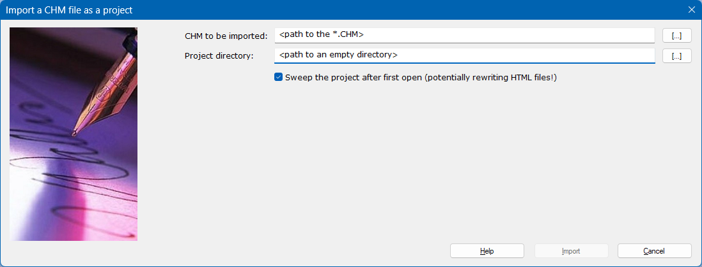

When NO project file is opened, it is possible to import an existing *.CHM file from disk and write it's contents to an empty directory. The import process is done by first copying the *.CHM file to the empty directory and then calling the Html Help Compiler (HHC.EXE) to decompile the file. All exsiting project files (*.HHP, *.HHC and *.HHK and all the HTML files and payload will then be created in this directory.
It is extremly important that the CHM you select is not already in the selected directory. The directory must be completely empty! As the CHM file is directly copied, you need not fear that the original contents will be altered.
As an option it is possible to NOT sweep through the project with the tidy tool, if you wan to be prudent about it's contents and do not want to disturb anything.
After the import you can immediatly inspect the project contents and begin working on it.
